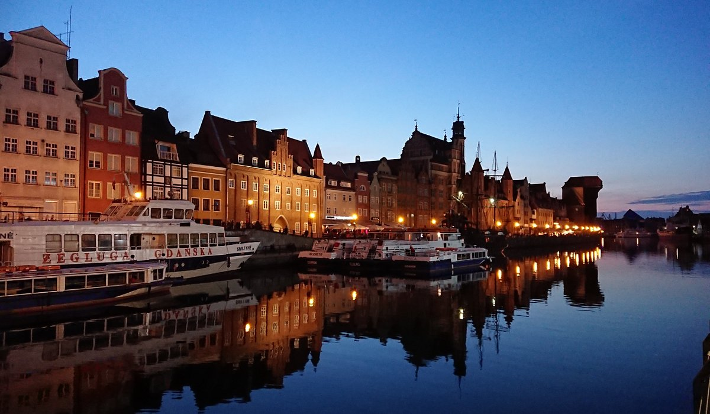
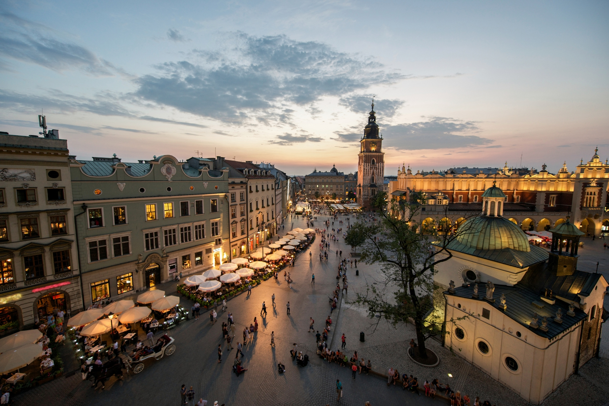

| index | places | historical data | sports | gastronomy | economy |
| Polonia | |||||
Poland is a country in Central Europe with a long history. Its history includes wars, destruction, and rebuilding. The capital city is Warsaw. It was almost completely destroyed during World War II and later rebuilt. Krakow is another important city. It keeps much of its old buildings and is a center of culture and tourism. Polish people have a strong national identity. This is connected to their language, traditions, and the Catholic religion. Poland’s economy is growing and includes industry, technology, farming, and services. Many international companies work in Poland because of its location in Europe and its skilled workers. Education is important in the country, and Polish universities are well known, especially for science and technology. |
|||||
|  | |||||
Daily life in Poland is often cheaper than in many Western European countries, but prices have gone up in recent years. Public transportation works well, and cities are well connected. The climate has cold winters and mild summers. Polish food is traditional and filling, with soups, meat, potatoes, and cabbage. Poland is also known for its role in recent European history. In the 1980s, the Solidarity movement helped end communism in Eastern Europe. Today, Poland mixes old traditions with modern life and continues to grow and change. |
|||||
|  | |||||